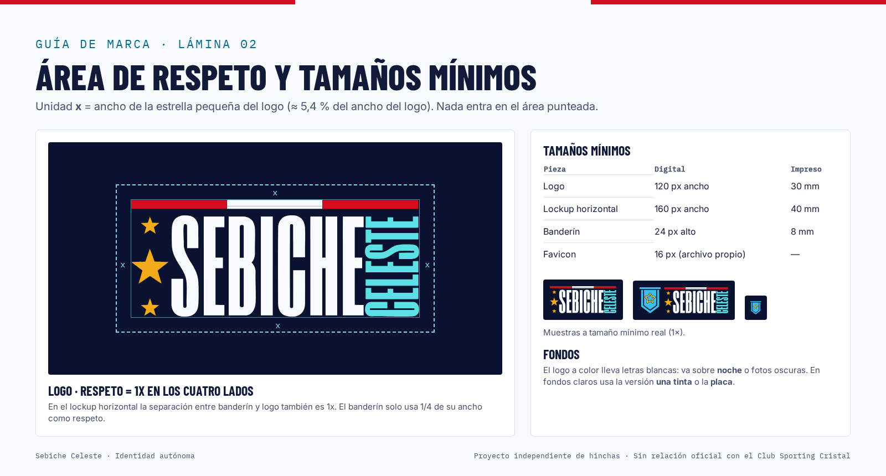
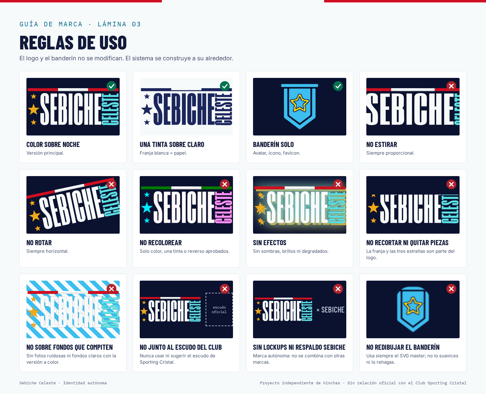

Octubre 2026 · archivo de hinchas de Sporting Cristal
Proyecto independiente de hinchas. Sin relación oficial con el Club Sporting Cristal. Este aviso va en la web, en las redes y en cualquier pieza pública. Nunca se usa el escudo del club, y nunca se combina con la marca SEBICHE (ni lockups ni respaldo).
Sebiche Celeste es un archivo estadístico de Sporting Cristal: 1948 partidos registrados desde 1956. La marca tiene que sentirse precisa, hincha y sobria: es un archivo con datos de verdad, no una cuenta de memes.
Ambos se trazaron a vector sin modificar ni un píxel y se comprobaron superponiéndolos al raster original:
| Pieza | Fuente | Diferencia media | Píxeles con diferencia >32 | IoU alfa |
|---|---|---|---|---|
| Logo (wordmark) | PNG 6001 px | 0,87 | 1,1 % | 0,998 |
| Banderín | Pixel art 84 px | 1,77 | 0,7 % | 0,991 |
La diferencia que queda está solo en los bordes con antialias. Los masters están en logo/svg/*-master.svg.
Versiones permitidas (solo cambia el color, nunca la forma): - Color: es la principal y va sobre fondos noche (#0B1230 a #1B265C). - Color con placa: la misma versión color sobre una placa noche, para fondos claros. - Tinta: una sola tinta #1B265C, para impresión o sellos. - Reverso: blanco, sobre fotos o sobre colores de la marca. - Lockup horizontal: banderín más logo, separados por 300 unidades (la x).

Área de respeto: x = ancho de la estrella pequeña, que equivale al 5,4 % del ancho del logo. Hay que dejar al menos 1x libre por cada lado.
Tamaños mínimos:
| Pieza | Pantalla | Impresión |
|---|---|---|
| Logo | 120 px | 30 mm |
| Lockup | 160 px | 40 mm |
| Banderín | 24 px | 8 mm |
| Favicon | 16 px | — |

| Token | Hex | Uso |
|---|---|---|
| noche.950 | #0B1230 | Fondo oscuro, fondo del logo |
| noche.800 | #1B265C | Header, tinta |
| celeste.400 | #3CBEEF | Acento en oscuro, banderín |
| celeste.700 | #086A8C | Acento y enlaces en claro |
| papel.50 | #F7FAFB | Fondo claro |
| oro | #F1AA19 | Marcador, destacados (en claro se usa #7A4E00) |
| rojo | #D10F21 | Franja del logo (solo decorativo) |
Victoria, empate y derrota tienen tonos propios en cada tema, y siempre van acompañados de la letra V, E o D: nunca dependen solo del color. Todas las combinaciones de texto cumplen WCAG AA (ver tokens/contrast-report.md, 35 de 36 combinaciones aprobadas).
Regla: el banderín celeste sobre papel da 2,04:1. Como es un logo, está exento de la norma de contraste, pero sobre fondo claro se recomienda usar la versión con placa o la versión tinta.
Los tokens se mantienen en tokens/tokens.json y desde ahí se generan tokens.css y tailwind.preset.cjs.
Las tres son OFL y van auto-alojadas en fonts/. Reemplazan a Avenir, que dependía de qué fuentes tuviera instaladas cada sistema.
tabular-nums.prefers-reduced-motion.Habla un hincha que sabe de datos: con cariño, exacto y sin agrandar las cosas.
| En vez de | Escribe |
|---|---|
| "¡¡EL MÁS GRANDE!! 🔥🔥" | "6 partidos un 24 de octubre: 5 victorias." |
| "Sporting Cristal oficial" | "Archivo de hinchas de Sporting Cristal" |
| "Destrozamos a Alianza" | "Alianza Lima 1–3 SC, 24 oct 2021" |
| "Datos aproximados" | "Fuente: archivo propio, 1956–2026" |
| "Síguenos para más" | "Suscríbete al calendario de partidos" |
En la locución de videos, el cierre es: "Sebiche Celeste es un proyecto independiente de hinchas, sin relación oficial con el Club Sporting Cristal."
| Pieza | Ruta |
|---|---|
| Logos (SVG y PNG) | logo/ |
| Iconos y manifest | icons/ |
| Plantillas para redes | social/ |
| Imágenes OG | og/ |
| Calendario .ics | ics/ |
| UI kit | ui-kit/ |
| Press kit | press/ |
Las filas que el plan asignaba a Claude Design se entregaron como piezas finales hechas en HTML y código. Sebiche puede refinarlas en Claude Design partiendo de esos HTML.